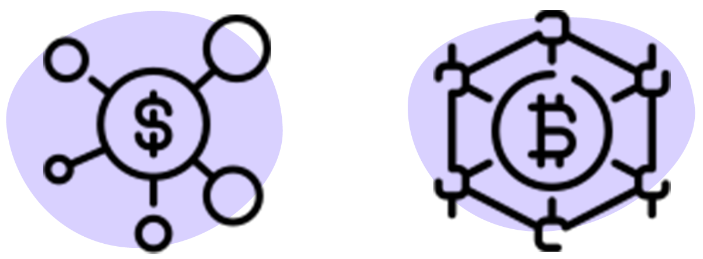
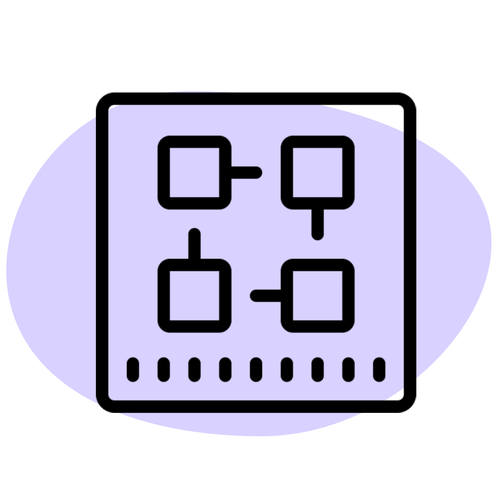
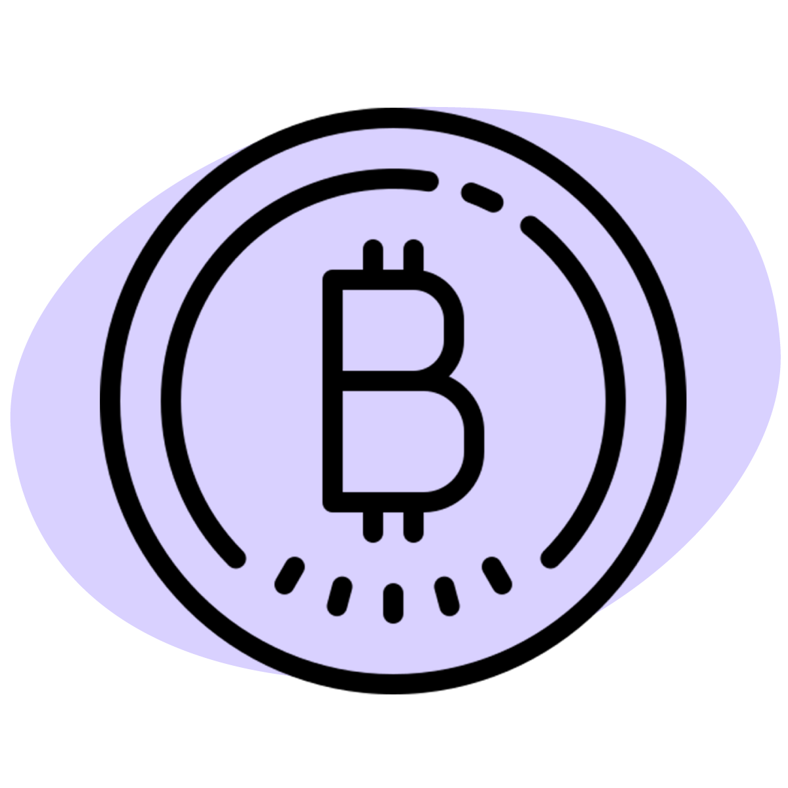
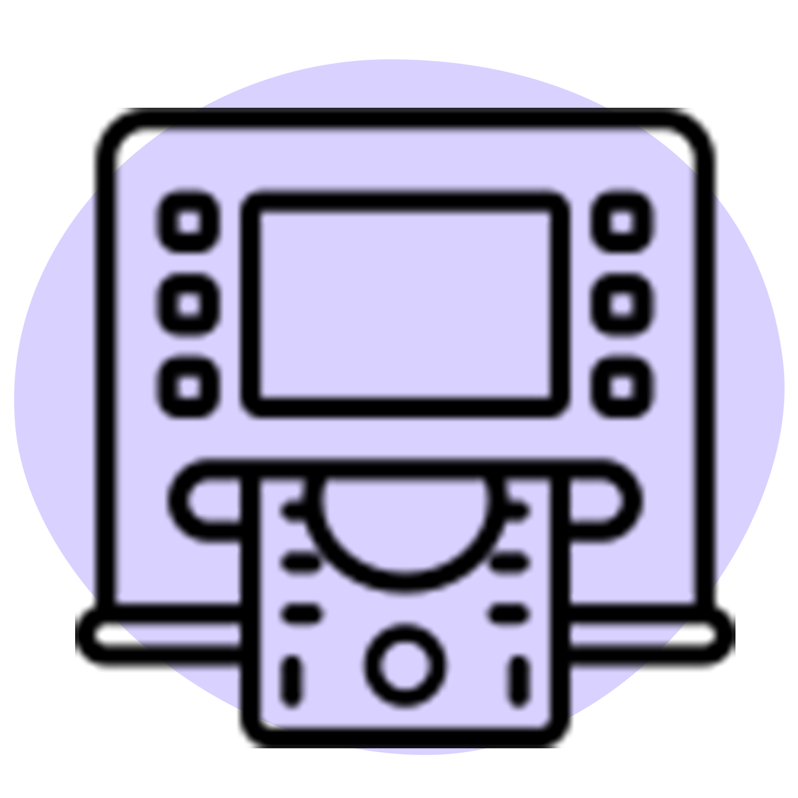

Kryptowährungen sind in aller Munde - Doch was sind überhaupt Kryptowährungen? Warum hat man Kryptowährungen erfunden und wer oder was steckt dahinter? Erfahre es im folgenden Blogartikel.
Was sind Kryptowährungen?
Eine Kryptowährung ist eine digitale Währung, eines dezentralen Zahlungssystems. Im Gegensatz zu unserem herkömmlichen Fiatgeld, ist eine Kryptowährung nur in digitaler Form vorhanden. Kryptowährungen wurden erfunden, um einen Zahlungsverkehr ohne die Aufsicht von Banken oder Behörden zu ermöglichen und somit ein dezentrales System zu schaffen.

Warum ein dezentrales System?
Das Ziel ist es die Entstehung von zentralen Parteien zu verhindern. Dadurch ist man nicht mehr gezwungen, diesen zu vertrauen und ihrem möglichen Machtmissbrauch ausgesetzt zu sein. Institutionen, die sich heutzutage in solch zentralen Positionen befinden sind bspw. Banken, Regierungen oder Unternehmen welche sich in
monopolistisch oder
oligopolistisch strukturierten Branchen befinden. In einem dezentralen Geldsystem kann niemand die Kontrolle der Guthaben der Nutzer haben, es blockieren oder übernehmen können.
Da Kryptowährungen auf einer dezentralen Datenbank basieren, auch
Distributed Ledger genannt, kann die Dezentralität bei gewährleistet werden. Die wichtigste und häufigste Realisierung des dezentralen Verzeichnisses bei Kryptowährungen, ist die Blockchain.
Was ist eine
Blockchain?
Die Blockchain ist vergleichbar mit einer Datenbank, welche allen und gleichzeitig niemandem gehört. Dadurch werden Vertrauensprobleme, welche häufig in unserer Wirtschaft und Gesellschaft entstehen, gelöst. Die Blockchain ermöglicht einen grenzenlosen Austausch von Informationen, Werten und Güter jeglicher Art, ohne auf zentrale Systeme (wie Konzerne, Banken oder Regierungen) zurückgreifen zu müssen. Die Anwendungsmethoden der Blockchain gehen weit über Kryptowährungen hinaus. Die Technologie kann auch in der Immobilien-, Versicherungs-, Social Media-, Mobilitäts-, Gesundheits-,
Startup-Branche oder für
e-Voting, dem Identitätsmanagement und in noch viele weiteren Bereichen genutzt werden. Man geht davon aus, dass mit dieser Eigenschaft ganze Branchen, Industrien und Tätigkeiten verändert oder sogar überflüssig werden
Wie funktioniert eine Blockchain?
Der Name der Blockchain, auf Deutsch Blockkette, kommt von seiner Funktionsweise. Jeder neue Eintrag auf der Blockchain besteht aus mehreren Informationen (bei Kryptowährungen aus Transaktionsinformationen). Sie werden zusammengefügt und ergeben einen Block. Diese Blöcke werden hintereinander gereiht, indem der neueste Block mit dem vorherigen
kryptografisch verkettet wird. Die kryptografische Verschlüsselung findet mithilfe des sogenannten
Proof of Stake- oder
Proof of Work-Prozesses statt. Die Technologie brauchst du als Nutzer jedoch nicht zu verstehen. Wichtig für dich zu wissen ist, dass dadurch eine unveränderbare Kette entsteht, in welcher die älteren Einträge nicht mehr verändert werden können und damit die Sicherheit der Blockchain gewährleistet werden kann.

Wer hat die Blockchain erfunden?Das Konzept hat sich ein
Pseudonym unter dem Namen
Satoshi Nakamoto – mit dem ursprünglichen Ziel einer dezentralen Währung zu schaffen – ausgedacht. Die Nutzung der Blockchain-Technologie wurde erstmals mit der virtuellen Währung, dem
Bitcoin, veröffentlicht. 2008 wurde das
Whitepaper «Bitcoin: Ein elektronisches
Peer-to-Peer-Cash-System» veröffentlicht. Ein Whitepaper ist eine kurzen Bericht der ein komplexes Thema prägnant aufbereitet, um den Lesern einen schnellen Zugang zu ermöglichen.
Was ist der Bitcoin?Der Bitcoin ist die weltweit erste Kryptowährung. Der Bitcoin kann weder physisch gedruckt noch durch eine Zentralbank oder eine andere zentrale Institution gesteuert, reglementiert oder gar manipuliert werden. Die Währung kann auch für den Kauf von Gütern, Dienstleistungen oder als Wertspeicher genutzt werden.Die Gesamtanzahl von Bitcoin ist auf 21 Millionen Bitcoin begrenzt. In anderen Worten bedeutet das, dass Bitcoin eine begrenzte Ressource und somit
deflationär ist.
Bitcoin muss nicht als Ganzes genutzt werden. Kleine Bitcoin-Beträge werden in
«Satoshi» angegeben. Ein Satoshi ist ein hundertmillionstel Bitcoin und ist die kleinste Einheit, die in der Blockchain aufgezeichnet werden kann.

Wofür brauchst du Kryptowährungen?
Kryptowährungen dienen als unabhängige Alternative zum klassischen Geld. Es gibt laut
Coinmarketcap über 19’000 Kryptowährungen. In der Schweiz ist die Nutzung von Kryptowährungen noch nicht weit verbreitet, daher werden sie primär als etablierte Investitions- und Spekulationsobjekte verwendet. Die Etablierung von Kryptowährung schreitet weltweit immer mehr voran.
Was steckt hinter Kryptowährungen?
Bitcoin, die erste Kryptowährung wurde als Zahlungsmittel, Wertspeicher und Leitwährung der Kryptowährungen benutzt - mehr kann der Bitcoin bis anhieb nicht. Hinter den meisten nachhaltigen Kryptowährungen steckt eine Vision, ein Projekt oder ein Unternehmen, wie wir es von Aktien kennen.
Ethereum – die bisher zweitgrösste Kryptowährung – speichert keine Münzen, sondern Programmcodes auf der Blockchain-Datenbank, sogenannte Smart Contracts. Smart Contracts sind programmierte Verträge welche sich automatisch ausführen lassen. Als Beispiel: Wird der Song X abgespielt, tätige eine Überweisung von Y an den Künstler. Solche Verträge sind auf der Blockchain unveränderbar und einfach nutzbar - das Potenzial ist quasi grenzenlos.
Mit dem Kauf von Kryptowährungen finanziert man das Unternehmen hinter der Währung, wie wir es durch den Kauf von Aktien kennen.
Wo kann ich in der Schweiz mit Kryptowährungen bezahlen?
Seit 2021 können im Kanton Zug die Steuern mit Bitcoin bezahlt werden. Des weiteren kann bei der SBB an über 10’000 Akzeptanzstellen, bei Digitec Galaxus, Lehner Versand, Bucherer, MB Auto Center Zug AG und rund 500 weiteren Firmen in der Schweiz laut
bitConsult mit Bitcoin bezahlen (Stand 20.5.2022).

Wie kann ich Kryptowährungen kaufen und verkaufen?
Für den Handel von Kryptowährungen brauchst du eine virtuelle Geldbörse, auch Wallet genannt. Auf der Wallet kannst du deine digitalen Münzen sicher speichern und schützen. Sie fungiert als eine Art Bankkonto, wenn man Zahlungen senden und empfangen möchte. Es gibt sogenannte Hot- und Cold-Wallets, also heisse und kalte Geldbörsen. Heisse Krypto-Geldbörsen sind aktiv mit dem Internet verbunden, also beispielsweise Handelsplattformen/Exchanges sowie klassische PC-/Smartphone-Wallets. Kalte Krypto-Geldbörsen sind nicht mit dem Internet verbunden, wie beispielsweise Papiergeldbörsen oder Hardware-Wallets (eine Art USB-Stick).
Sobald du ein Wallet hast, kannst du deine gewünschte Kryptowährung, bei einem Marktplatz oder einer Börse, (ver-)kaufen und auf deine Wallet legen. Wie du als Vergleich deine Euros oder Dollars auf einer Bank umtauschen gehst. Sobald du Kryptowährungen kaufen möchtest, empfehle ich dir dies über namhafte Anbieter zu tun. Europäische Krypto-Börsen oder CFD-Broker haben höhere Sicherheitsstandards als zum Beispiel asiatische Anbieter.